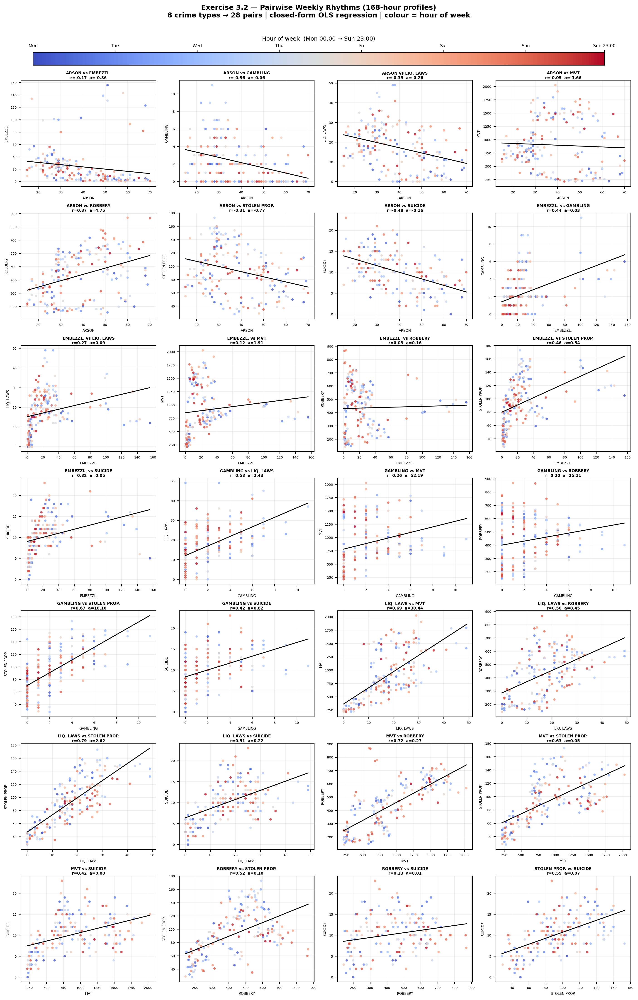

What the data actually shows about crime in SF
We analyzed crime data from San Francisco to figure out what's really going on. When does crime happen? Where does it happen? What does the data actually tell us?
We looked at crime data from SF and tried to find interesting patterns
So we got a bunch of crime data from San Francisco and started digging into it. We looked at when crimes happen, where they happen, and what types of crimes there are. We used statistics to figure out if different things in the data are related to each other. Basically, we tried to make sense of all the numbers and show it in a way that's actually interesting to look at.
Looking at whether different variables in the data are connected

This chart compares a bunch of different variables two at a time to see if they're related. The different colors help you spot patterns and see where the data clusters. We also drew lines through the data to show the general trend. Basically, it helps us figure out if one thing goes up when another thing goes up, or if they're totally independent of each other. Pretty useful for understanding what actually matters.
Play around with these - they're actually interactive so you can zoom in and click stuff
This is a map of San Francisco showing where the crimes happened. You can zoom in on it and see which neighborhoods have more incidents. Some areas definitely have a lot more than others - that's pretty interesting.
This chart shows when crimes happen throughout the day. Some hours are way busier than others. You can interact with it to see more details. It's kind of cool to see when the peak times are.